Github Actions + Hugo + Terraform + S3
- Create a static blog with Hugo
- Host it on S3 using a CloudFront CDN and a domain name managed by Route 53
- Doing this manually from the web browser interface
- Redoing the same thing with Terraform
- Redoing it using Github Actions to automate the deployment of new posts
- The GitOps approach makes it possible to update the site or the infrastructure according to the path of the commited files

Install, explore and build the project
Get the code from this github repository :
# create a `tmp` directory in $HOME
$ mkdir --parents $HOME/tmp
# download the code
$ git clone \
--depth 1 \
https://github.com/jeromedecoster/github-actions-hugo-terraform-s3.git \
$HOME/tmp/aws
# cd
$ cd $HOME/tmp/aws
We launch the site :
$ make dev
This script performs the following :
$ hugo server \
--buildDrafts \
--disableFastRender
We note the use of the --buildDrafts option which shows us all the posts, even the drafts, which will not appear in the build version.
The website at http://localhost:1313 :
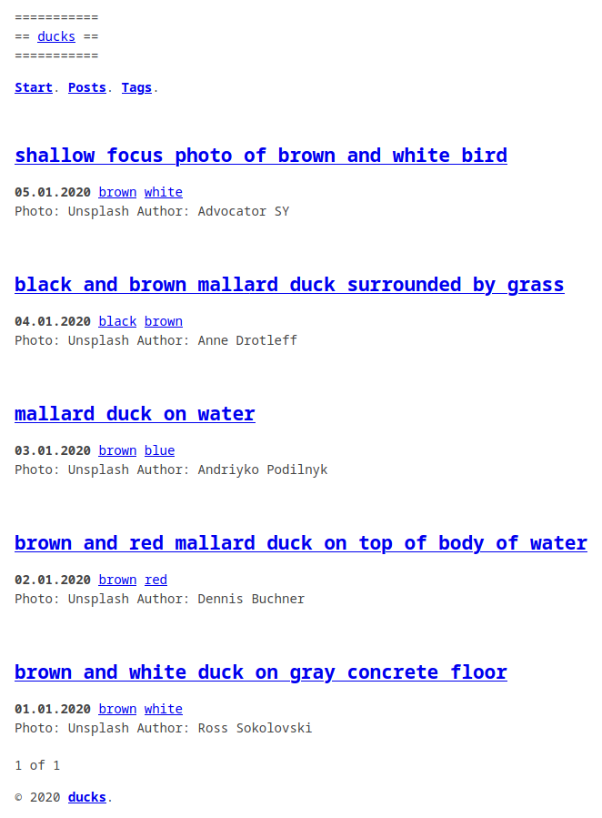
The draft: true attribute is defined in the Front Matter of the last 2 posts.
Here is the example of the post black-and-brown-mallard-duck-surrounded-by-grass :
---
title: "black and brown mallard duck surrounded by grass"
description: "black and brown mallard duck surrounded by grass"
date: "2020-01-04"
tags: [black, brown]
draft: true
---

Here’s a blog content page :
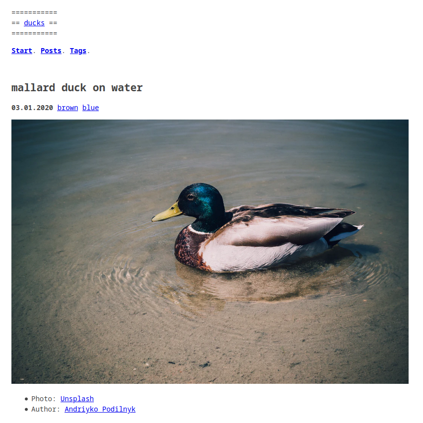
To see the site without the drafts we can do :
$ make dev-nodraft
This command simply do this :
$ hugo server
We see that the 2 most recent articles have disappeared :
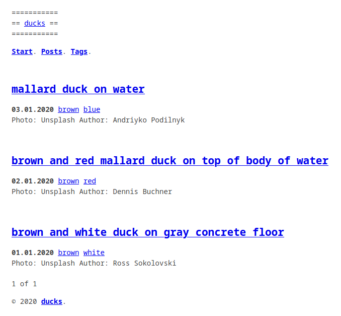
Creating the S3 bucket
I’m going to create a static S3 site that will be associated with my domain name jeromedecoster.net :
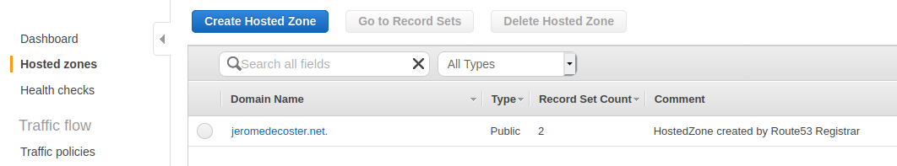
I create a bucket www.jeromedecoster.net :
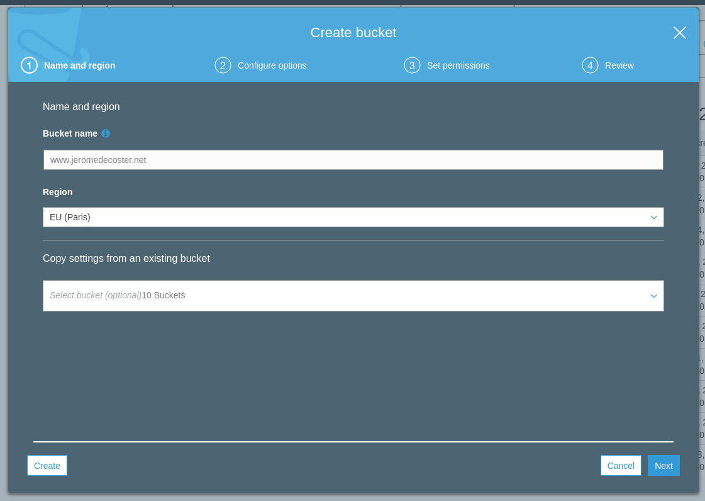
I authorize all public access :
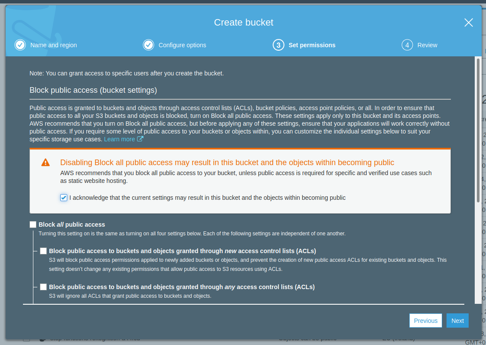
The bucket is created :
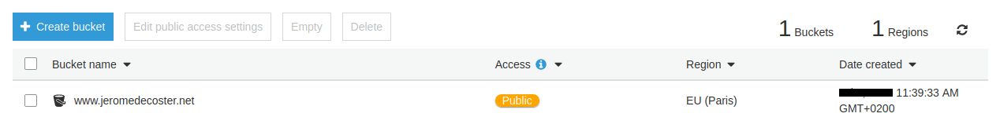
I activate the static website hosting and I indicate the index page and the error page :
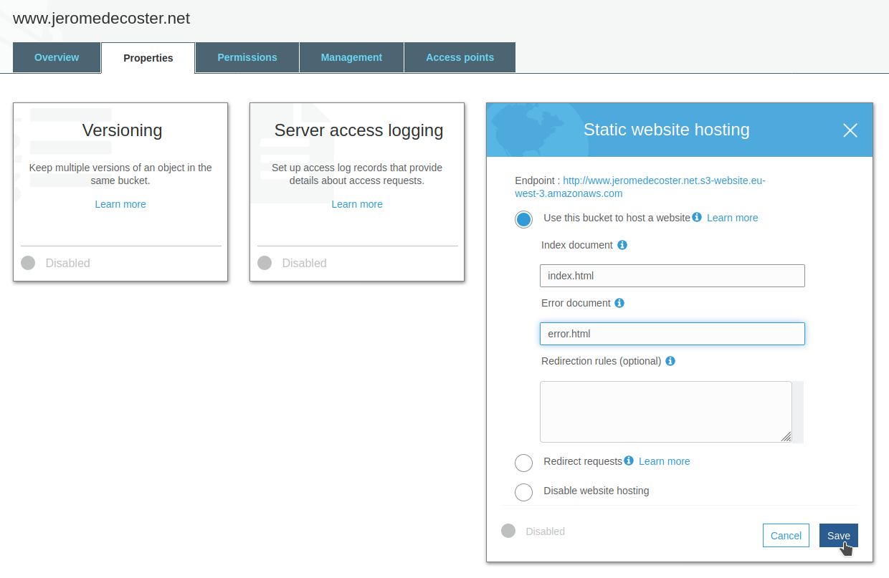
Creating the SSL certificate
For my site to support HTTPS, I need to:
- Create an SSL certificate on AWS Certificate Manager.
- Create a CloudFront distribution and associate it with this certificate.
In order to associate our SSL certificate with our CloudFront distribution, our certificate must be created in the us-east-1 region :
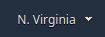
I start creating the certificate :
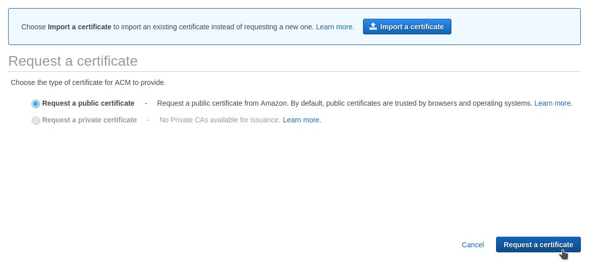
I enter 2 domain names jeromedecoster.net and *.jeromedecoster.net :
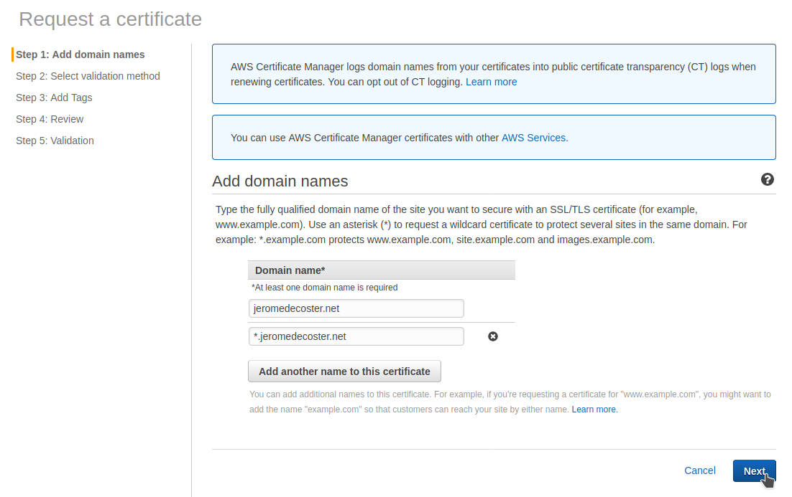
I choose DNS validation method :

The validation is now awaiting an action :
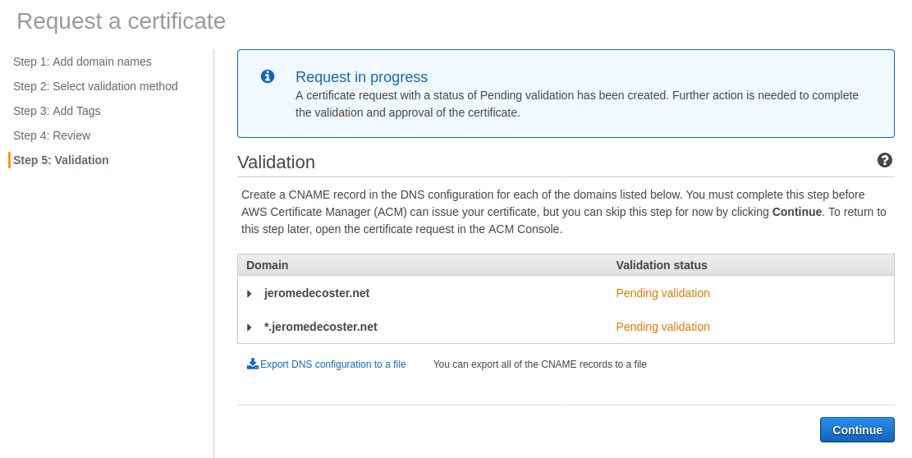
I need to create a specific CNAME record in Route 53.
I just need to click this button to validate the 2 domains at the same time :
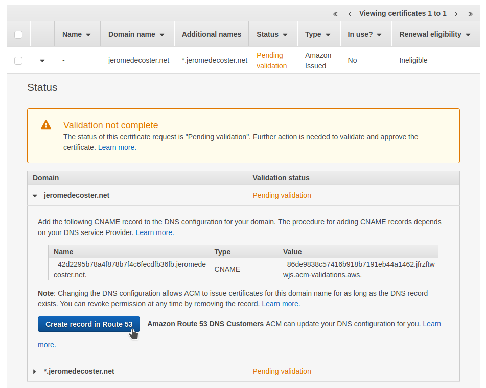
I can see that a CNAME record was added in Route 53 after the click :
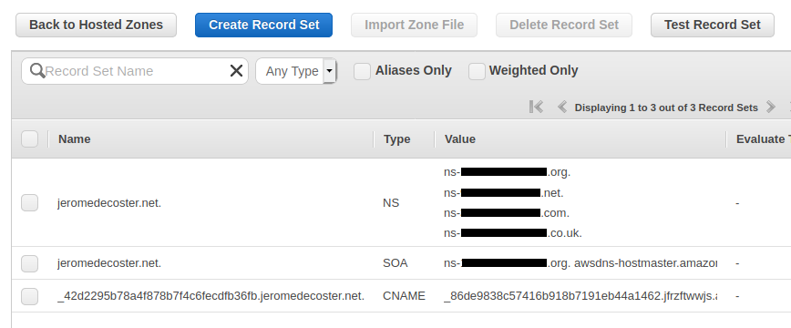
After a few seconds, I refresh the interface to see that my certificate has been validated :
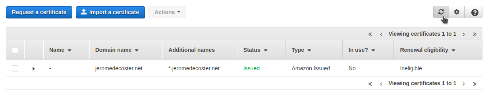
Creation the CloudFront CDN
We are now creating the CloudFront distribution :
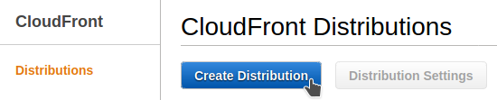
Warning : for the Origin Domain Name parameter, you MUST NOT CHOOSE the S3 bucket listed in the drop-down list !

You must indicate the endpoint of the bucket given in the S3 properties :
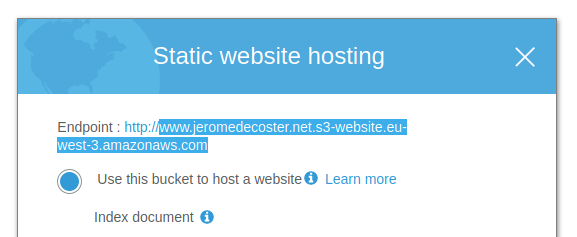
The drop-down list suggest :
www.jeromedecoster.net.s3.amazonaws.com
But you have to indicate :
www.jeromedecoster.net.s3-website.eu-west-3.amazonaws.com
I also choose Redirect HTTP to HTTPS :
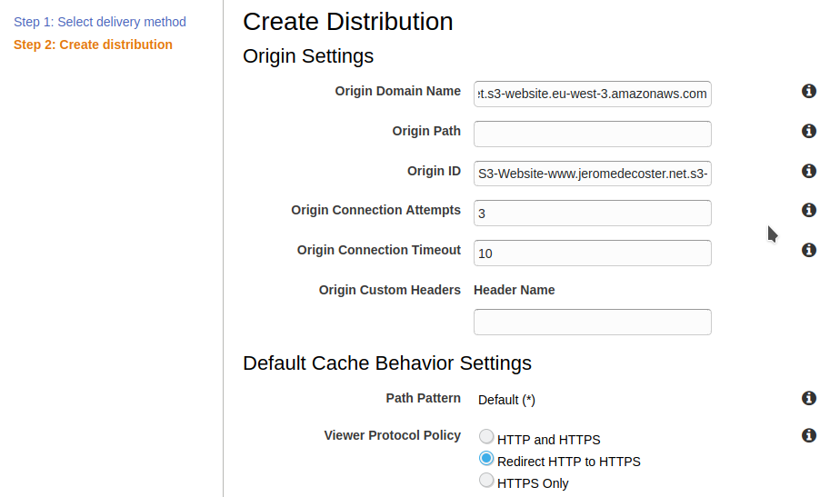
For Alternate Domain Names, I indicate www.jeromedecoster.net.
I choose Custom SSL Certificate and I select my certificate :
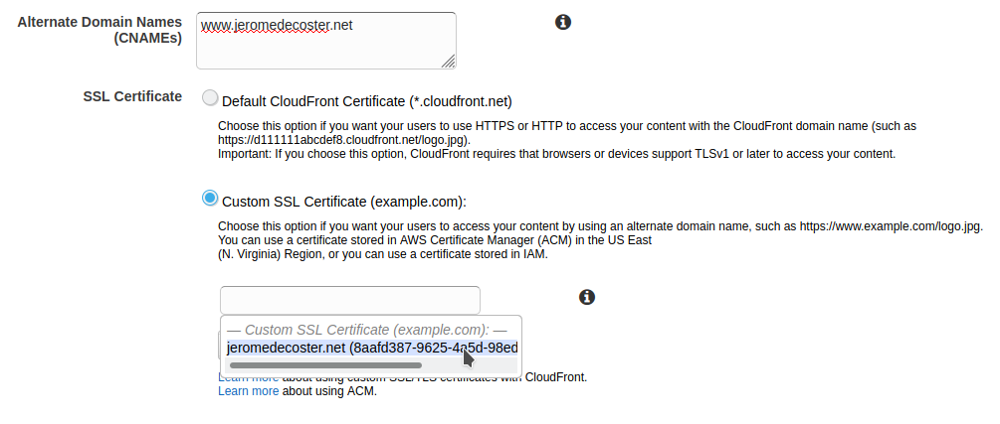
I leave the other parameters by default and I validate the creation of the distribution :
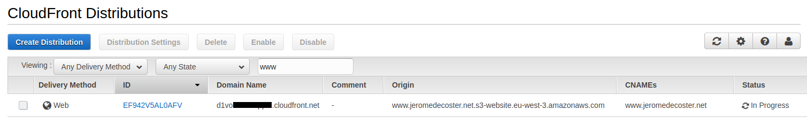
I copy in my clipboard the Domain Name URL of my distribution :
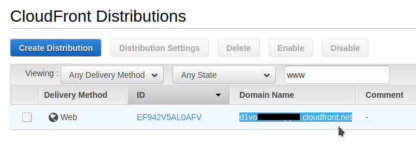
Finalization on Route 53
I will now create a Record Set in Route 53 to route the traffic to my distribution :
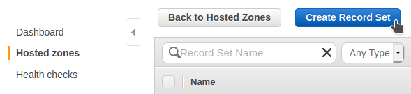
I indicate www and I create a type A Record Set.
I choose Alias : Yes.
I see that my CloudFront distribution does not appear in the drop-down list.
This is not an error. It actually takes a while for this to become visible :
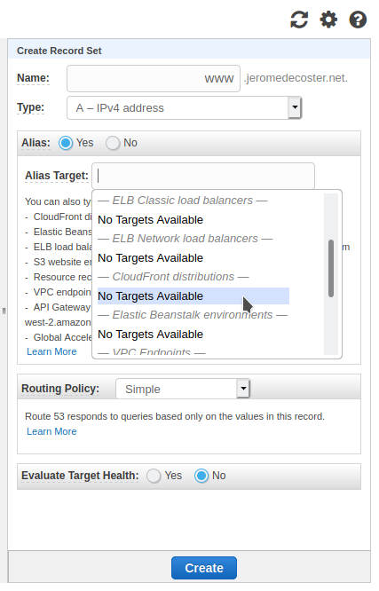
I can however directly paste the URL Domain Name of my CloudFront distribution that I had copied to my clipboard a few steps above.
I validate by clicking Create :
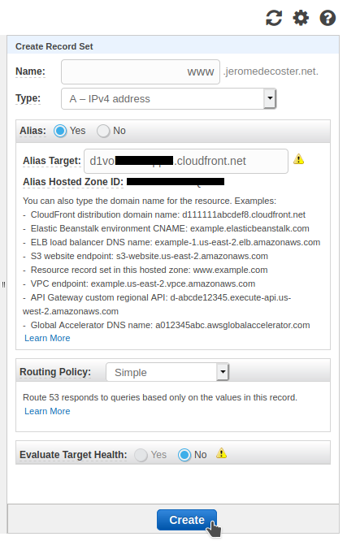
I do the same thing again to create a type AAAA Record Set :
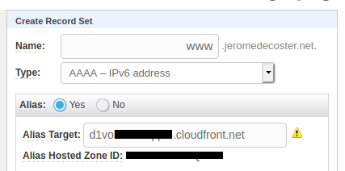
Putting the site online
I will now generate the static site with Hugo :
$ make build
This command simply executes :
$ rm public \
--force \
--recursive
$ hugo
Files are generated in the public directory :
# -L level : Max display depth of the directory tree.
# -F : Append a `/' for directories
# --dirsfirst : List directories before files.
$ tree public -L 1 -F --dirsfirst
public
├── categories/
├── css/
├── page/
├── posts/
├── tags/
├── index.html
├── index.xml
└── sitemap.xml
I will now upload these files to my bucket :
$ make upload
This command simply executes :
$ cd public
$ aws s3 sync --acl public-read . s3://www.$APEX_DOMAIN
The variable $APEX_DOMAIN is declared in the make.sh file :
#
# variables
#
# AWS variables
AWS_PROFILE=default
AWS_REGION=eu-west-3
# project name
PROJECT_NAME=github-actions-hugo
# apex domain name
APEX_DOMAIN=jeromedecoster.net
If I display the URL https://www.jeromedecoster.net in my browser :
Using Terraform
We have just seen all the manual steps necessary to put a static site online.
We are now going to recreate this site identically using Terraform and aws cli in order to automate this task.
I start by destroying all my previously created resources :
- The CloudFront distribution
- The SSL certificate
- The S3 bucket
- The
CNAME,AandAAAARecord Sets
Important: I choose to NOT MANAGE the creation of the SSL certificate by Terraform but to do it with aws cli. I also do NOT CREATE a Hosted Zone with Terraform.
Even if the creation / destruction of these resources is technically easy to do with Terraform, it seems preferable to manage it manually or via a bash script for the following reasons:
-
You probably already have an existing a hosted zone. It is therefore not necessary to recreate another dynamically. Especially since each hosted area is billed monthly.
-
Il est probable que vous possédiez déjà une hosted zone. Il n’est donc pas nécessaire d’en recréer une supplémentaire dynamiquement. D’autant que chaque hosted zone est facturée mensuellement.
-
Creating a certificate to associate it with a hosted zone is not a recurring task. Once created, there is little chance that you will want to delete it. We therefore avoid removing it unnecessarily by executing
terraform destroy.
I create my certificate :
$ make create-certificate
This command executes this script :
# create the certificate in us-east-1
$ CERTIFICATE_ARN=$(aws acm request-certificate \
--domain-name $APEX_DOMAIN \
--subject-alternative-names *.$APEX_DOMAIN \
--validation-method DNS \
--query CertificateArn \
--region us-east-1 \
--output text)
# get the CNAME datas for the DNS valitaion
$ RESOURCE_RECORD=$(aws acm describe-certificate \
--certificate-arn $CERTIFICATE_ARN \
--query 'Certificate.DomainValidationOptions[0].ResourceRecord' \
--region us-east-1)
$ CNAME_NAME=$(echo "$RESOURCE_RECORD" | jq --raw-output '.Name')
$ CNAME_VALUE=$(echo "$RESOURCE_RECORD" | jq --raw-output '.Value')
# create the change Record Set file
$ cat > CNAME.json << EOF
{
"Comment": " ",
"Changes": [
{
"Action": "CREATE",
"ResourceRecordSet": {
"Name": "$CNAME_NAME",
"Type": "CNAME",
"TTL": 600,
"ResourceRecords": [
{
"Value": "$CNAME_VALUE"
}
]
}
}
]
}
EOF
# get the hosted zone id
$ HOSTED_ZONE_ID=$(aws route53 list-hosted-zones-by-name \
--dns-name $APEX_DOMAIN \
--profile $AWS_PROFILE \
--query 'HostedZones[0].Id' \
--output text)
# add the CNAME record set
$ aws route53 change-resource-record-sets \
--hosted-zone-id $HOSTED_ZONE_ID \
--change-batch file://CNAME.json
We don’t want Terraform State files to be on our machine. We want them to be hosted on S3.
We define it in the main.tf file :
terraform {
# 'backend-config' options must be passed like :
# terraform init -input=false -backend=true \
# [with] -backend-config="backend.json"
# [or] -backend-config="backend.tfvars"
# [or] -backend-config="<key>=<value>"
backend "s3" {}
}
So we create a specific bucket to receive the Terraform State files :
$ make tf-setup-backend
This command simply executes :
# create a random name
$ S3_BACKEND=$PROJECT_NAME-$(mktemp --dry-run XXXX | tr '[:upper:]' '[:lower:]')
# write this name as a variable in a settings.sh file
$ echo "S3_BACKEND=$S3_BACKEND" > settings.sh
# create the bucket
$ aws s3 mb s3://$S3_BACKEND --region $AWS_REGION
We can now initialize Terraform :
$ make tf-init
This command simply executes :
# set $S3_BACKEND
$ source settings.sh
# initialize terraform
$ terraform init \
-input=false \
-backend=true \
-backend-config="region=$AWS_REGION" \
-backend-config="bucket=$S3_BACKEND" \
-backend-config="key=terraform" \
-reconfigure
Let’s take a look at some excerpts from Terraform files.
We use a trick to create resources in 2 different regions in main.tf :
provider aws {
region = var.region
profile = var.profile
}
provider aws {
region = "us-east-1"
profile = var.profile
alias = "us_east_1"
}
I create a Record Set using an already existing Hosted Zone in route53.tf :
data aws_route53_zone zone {
name = var.apex_domain
}
resource aws_route53_record A {
zone_id = data.aws_route53_zone.zone.zone_id
name = "www.${var.apex_domain}"
type = "A"
alias {
name = aws_cloudfront_distribution.distribution.domain_name
zone_id = aws_cloudfront_distribution.distribution.hosted_zone_id
evaluate_target_health = false
}
}
Creating the bucket for static website hosting in s3.tf :
resource aws_s3_bucket bucket {
bucket = "www.${var.apex_domain}"
force_destroy = true
acl = "public-read"
website {
index_document = "index.html"
error_document = "error.html"
}
}
data aws_iam_policy_document policy {
statement {
principals {
type = "*"
identifiers = ["*"]
}
actions = ["s3:GetObject"]
resources = ["${aws_s3_bucket.bucket.arn}/*"]
}
}
resource aws_s3_bucket_policy bucket_policy {
bucket = aws_s3_bucket.bucket.id
policy = data.aws_iam_policy_document.policy.json
}
Creation of the CloudFront distribution in cloudfront.tf :
resource aws_cloudfront_distribution distribution {
provider = aws.us_east_1
origin {
domain_name = aws_s3_bucket.bucket.website_endpoint
origin_id = aws_s3_bucket.bucket.website_endpoint
custom_origin_config {
http_port = 80
https_port = 443
origin_protocol_policy = "http-only"
origin_ssl_protocols = ["TLSv1", "TLSv1.1", "TLSv1.2"]
}
}
enabled = true
is_ipv6_enabled = true
comment = ""
default_root_object = "index.html"
aliases = ["www.${var.apex_domain}"]
default_cache_behavior {
allowed_methods = ["GET", "HEAD"]
cached_methods = ["GET", "HEAD"]
target_origin_id = aws_s3_bucket.bucket.website_endpoint
compress = true
forwarded_values {
query_string = false
cookies {
forward = "none"
}
}
viewer_protocol_policy = "redirect-to-https"
min_ttl = 0
default_ttl = 86400
max_ttl = 31536000
}
viewer_certificate {
acm_certificate_arn = data.aws_acm_certificate.cert.arn
ssl_support_method = "sni-only"
minimum_protocol_version = "TLSv1.2_2018"
}
restrictions {
geo_restriction {
restriction_type = "none"
}
}
}
Now we can create the infrastructure :
$ make tf-apply
Then upload the files :
$ make upload
If I display the URL https://www.jeromedecoster.net in my browser :
Website update with Github actions
I create a workflow to rebuild the site and deploy it automatically after each update with cd.yml :
Let’s look at some excerpts.
The workflow will only be triggered if files are modified after a push action in these directories :
name: cd
on:
push:
paths:
- "content/**"
- "extra/**"
- "layouts/**"
- "static/**"
We use the peaceiris/actions-hugo action to install Hugo.
Then we generate the website very simply :
- name: Setup Hugo
uses: peaceiris/actions-hugo@v2
- name: Build with Hugo
run: hugo --minify
We deploy the files in the S3 bucket:
- name: Deploy static site to S3 bucket
run: |
cd public
aws s3 sync \
--delete \
--acl public-read \
. s3://www.jeromedecoster.net
We launch a CloudFront invalidation on specific files to update our site quickly :
- name: Cloudfront invalidation
run: |
aws cloudfront create-invalidation \
--distribution-id ${{ secrets.DISTRIBUTION_ID }} \
--paths "/" \
"/index.html" \
"/posts/" \
"/posts/index.html" \
"/tags/" \
"/tags/index.html"
I create project specific AWS accesses :
$ create-user
This command executes this script :
# create the user
$ aws iam create-user \
--user-name $PROJECT_NAME
# attach a PowerUserAccess policy
$ aws iam attach-user-policy \
--user-name $PROJECT_NAME \
--policy-arn arn:aws:iam::aws:policy/PowerUserAccess
# ... get the AWS_ACCESS_KEY_ID and AWS_SECRET_ACCESS_KEY values ...
# write these values in a secrets.sh file
cat > secrets.sh << EOF
AWS_ACCESS_KEY_ID=$AWS_ACCESS_KEY_ID
AWS_SECRET_ACCESS_KEY=$AWS_SECRET_ACCESS_KEY
EOF
I add some secret variables to my github project :
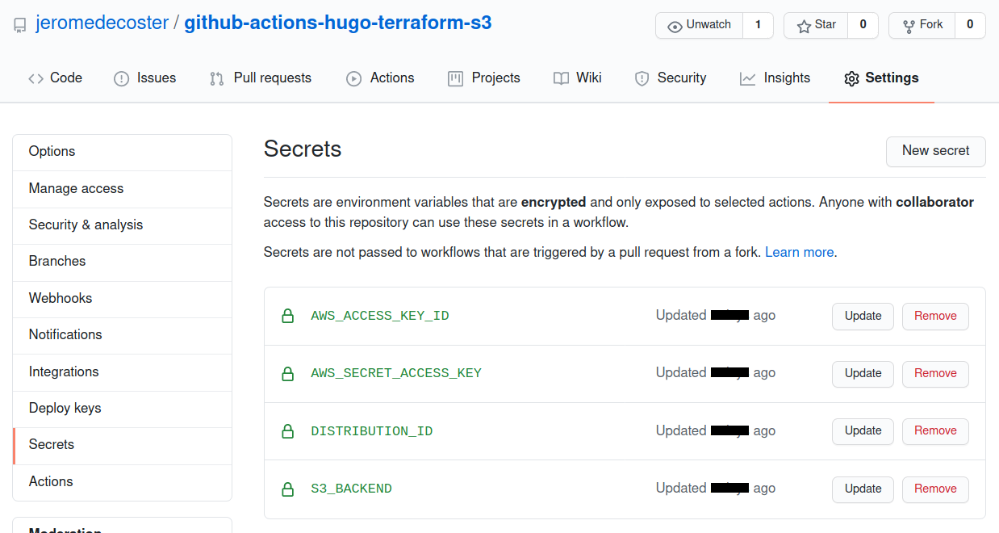
I modify a post that had remained in draft: true.
I set now draft: false :
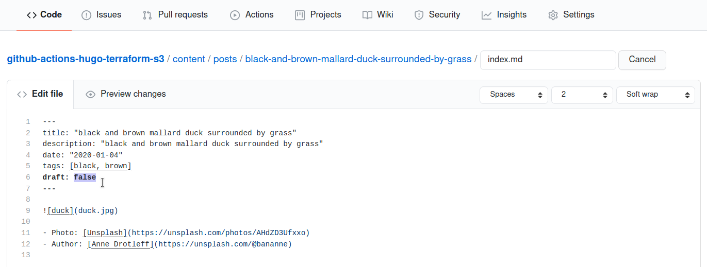
After the commit, the action is executed quickly :
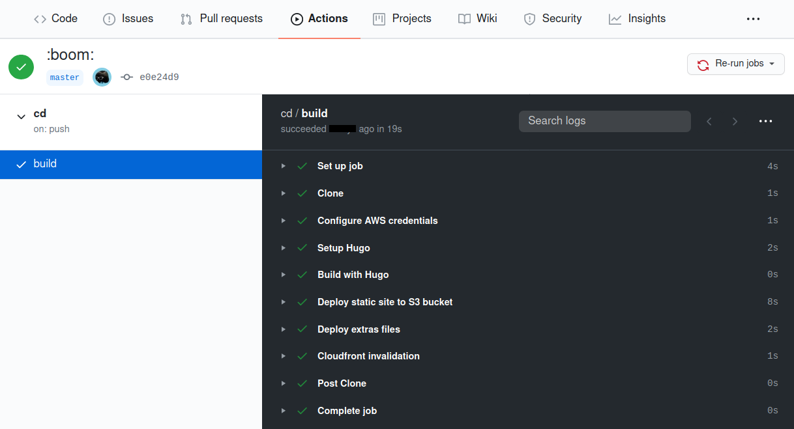
I see the new blog post, my website is updated successfully :
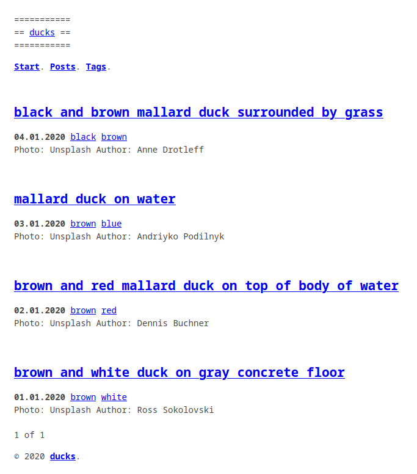
Infrastructure update with Github actions
I create a workflow to update the infrastructure with Terraform in infra.yml.
Let’s look at some excerpts.
The workflow will only be triggered if files are modified after a push action in this directory :
name: infra
on:
push:
paths:
- "infra/**"
Some of the variables used by Terraform are defined :
env:
AWS_ACCESS_KEY: ${{ secrets.AWS_ACCESS_KEY_ID }}
AWS_SECRET_ACCESS_KEY: ${{ secrets.AWS_SECRET_ACCESS_KEY }}
AWS_REGION: eu-west-3
TF_VAR_apex_domain: jeromedecoster.net
Terraform is installed using the hashicorp/setup-terraform action, and then initialized with the remote state backend :
- name: Setup Terraform
uses: hashicorp/setup-terraform@v1.1.0
- name: Terraform Init
timeout-minutes: 2
run: |
terraform init \
-input=false \
-backend=true \
-backend-config="region=${{ env.AWS_REGION }}" \
-backend-config="bucket=${{ secrets.S3_BACKEND }}" \
-backend-config="key=terraform" \
-reconfigure
We apply the transformations :
- name: Terraform Plan
run: terraform plan -out=terraform.plan
- name: Terraform Apply
run: terraform apply -auto-approve terraform.plan
To test this action I create an additional bucket by uncommenting these lines in the s3.tf file :
# resource aws_s3_bucket bucket_test {
# bucket = "test.${var.apex_domain}"
# force_destroy = true
# }
This bucket is useless for my project, it’s just to test the process.
The action is quickly executed successfully :
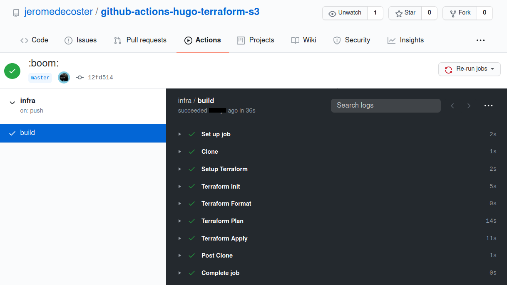
The bucket has been created :
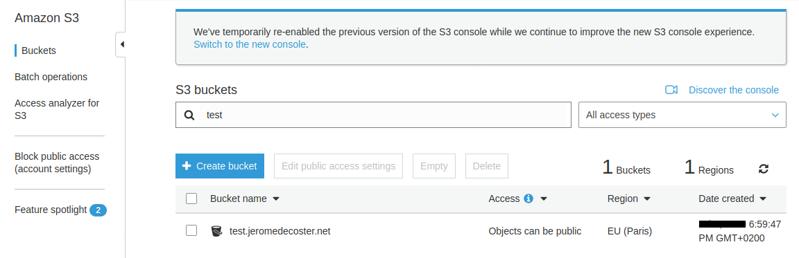